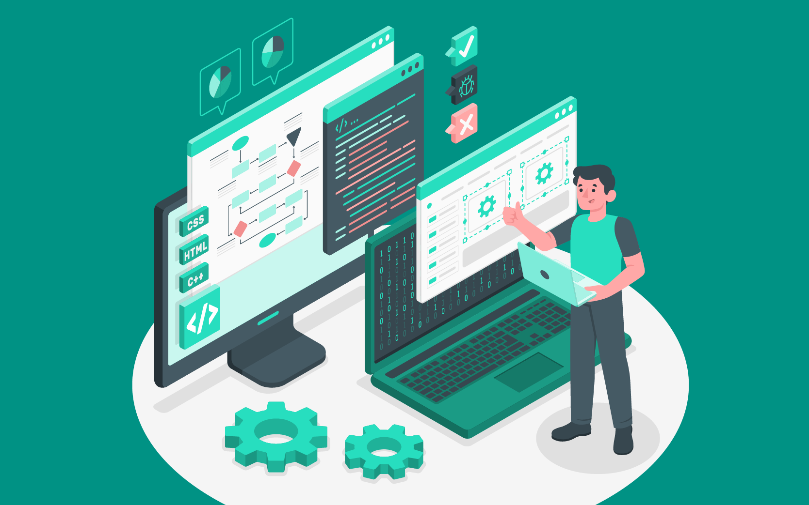
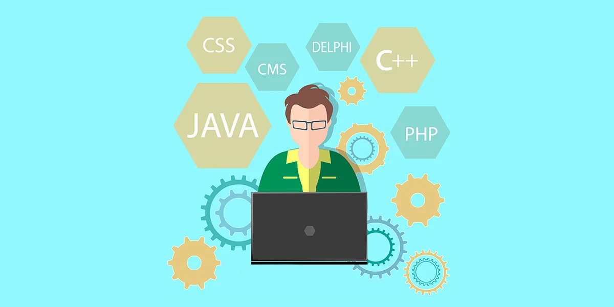

Gerente de T.I

O gerente de T.I é o profissional responsável por coordenar todas as tarefas relacionadas à área da tecnologia da informação de um negócio. Suas principais funções incluem:
• Encontrar e corrigir falhas em programas e processos;
• Sugerir novas ferramentas;
• Definir melhores práticas;
• Garantir a segurança das informações.
Além disso, é de responsabilidade do gerente de TI liderar e gerenciar os funcionários do setor. Para isso, ele deve avaliar o desempenho dos colaboradores, supervisionar os times e oferecer treinamento para as equipes. Para se tornar gerente de T.I, é necessário ter formação superior em áreas relacionadas à tecnologia, como ciência da computação, engenharia da computação ou sistemas de informação. Além disso, é importante dispor de experiência comprovada em cargos de liderança na área de T.I, como analista de sistemas, coordenador de T.I ou gerente de projetos.
Níveis de hierarquia:
Junior – faixa salarial de R$ 4.850,00 a R$ 7.050,00;
Pleno – faixa salarial de R$ 6.900,00 a R$ 11.600,00;
Sênior –faixa salarial de R$ 10.750,00 a R$ 18.050,00;
